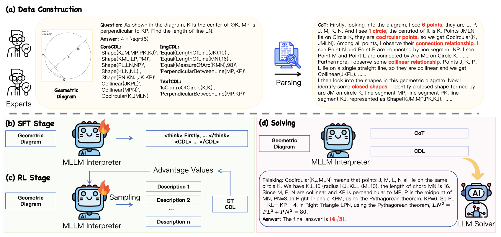
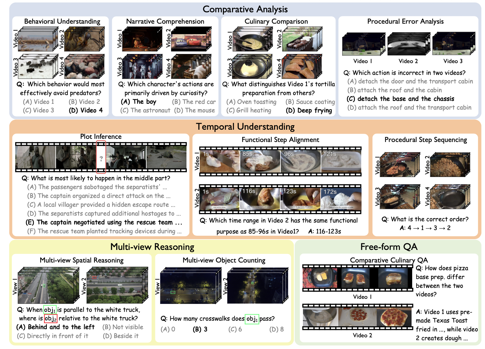
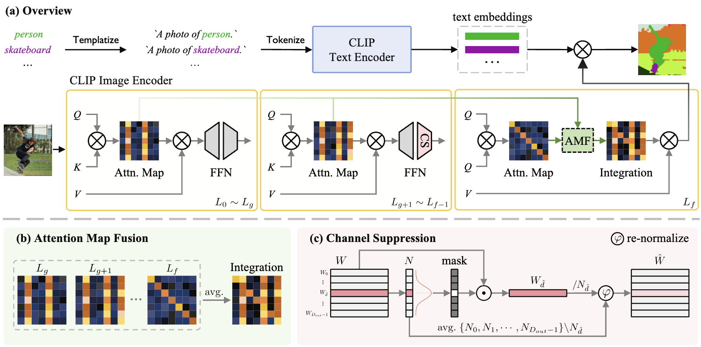
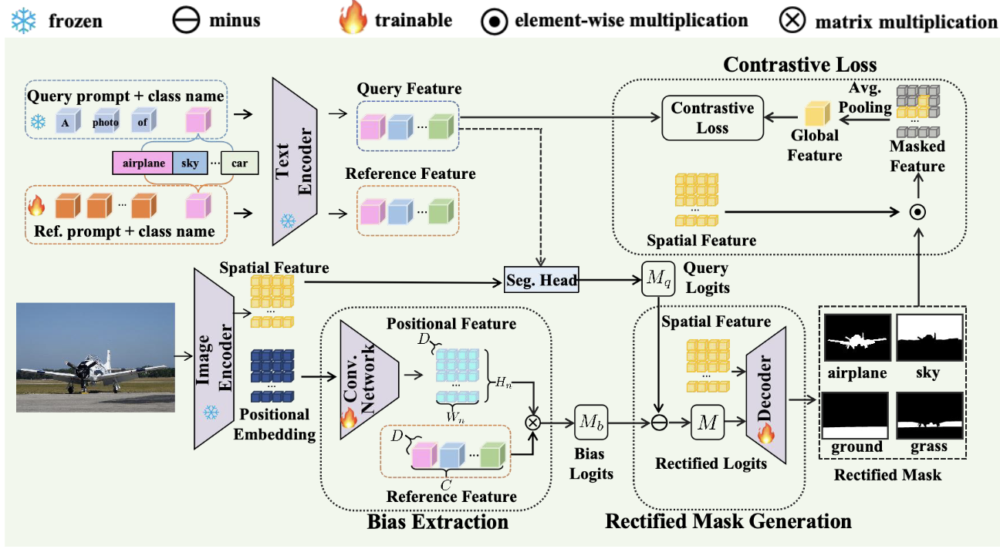

Jingyun Wang (汪婧昀)
Ph.D. Student · Beihang University (BUAA)
I am a third-year Ph.D. student at Beihang University (BUAA), advised by Prof. Guoliang Kang. Previously, I obtained my B.Eng. degree in Computer Science and Engineering from Shenyuan Honors College, BUAA, in 2023.
My research interests include Deep Learning, Computer Vision, and Multimodal Large Language Models (MLLMs).
My research interests include Deep Learning, Computer Vision, and Multimodal Large Language Models (MLLMs).
Publications





Other Publications
- Efficient and Accurate Prompt Optimization: The Benefit of Memory in Exemplar-Guided Reflection.
ACL, 2025 main.
Cilin Yan*, Jingyun Wang*, Lin Zhang*, Ruihui Zhao, Xiaopu Wu, Kai Xiong, Qingsong Liu, Guoliang Kang, Yangyang Kang. - LTCA: Long-Range Temporal Context Attention for Referring Video Object Segmentation.
TCSVT, 2025.
Cilin Yan*, Jingyun Wang*, Guoliang Kang. - USB-Rec: An Effective Framework for Improving Conversational Recommendation Capability of Large Language Model.
RecSys, 2025.
Jianyu Wen*, Jingyun Wang*, Cilin Yan, Jiayin Cai, Xiaolong Jiang, Ying Zhang. - Separate Motion from Appearance: Customizing Motion via Customizing Text-to-Video Diffusion Models.
ACM MM, 2025.
Huijie Liu, Jingyun Wang, Shuai Ma, Jie Hu, Xiaoming Wei, Guoliang Kang.
Internships
- 小红书 hilab Post-training 2026.02 – Present
- 腾讯 PCG QQ 2025.05 – 2026.01
- 淘天 未来生活实验室 2025.02 – 2025.05
Academic Service
Conference Reviewer
- IEEE/CVF Conference on Computer Vision and Pattern Recognition (CVPR)
- International Conference on Machine Learning (ICML)
- European Conference on Computer Vision (ECCV)
- Conference on Neural Information Processing Systems (NeurIPS)
Journal Reviewer
- IEEE Transactions on Circuits and Systems for Video Technology (TCSVT)